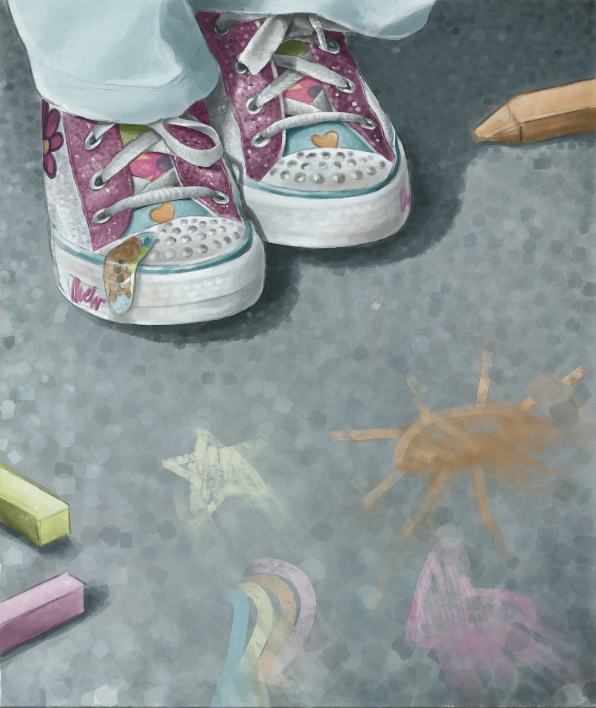

Washed Away

Project Description:
This assignment was a project created for a Color Theory course at Las Positas Community College. The prompt was to create an artwork based off of a song, and I chose "Scott Street" by Pheobe Bridgers. To me, this song perfectly encapsulates the feeling of nostalgia, and yearning for a childhood that has been washed away. Additionally, the song talks about the feeling of realizing that you have grown up and moved on from your past, which is a feeling I have been experiencing a lot lately. I created this piece digitally on ProCreate, using a stippling technique to achieve the realistic and textured effect. This assignment was extremeley comforting to me, because it allowed me to both explore my own emotions and create using a medium I love.